GitHub Pages+Hexo+Fluid搭建个人博客网站
GitHub Pages+Hexo+Fluid搭建个人博客网站
本文介绍如何使用GitHub Pages + Hexo搭建个人博客网站，完全免费，所有内容本人亲测，绝对可用。
一、准备工作
GitHub账号
需要有一个GitHub账号，没有的话到 官网 申请一个。
注册很简单，不懂的话可以参考 GitHub申请账号安装Git
在自己电脑上安装好Git，hexo部署到GitHub时要用。
网上找篇教程或者参考 Git安装(Windows)安装NodeJS
在自己电脑上安装好NodeJS，Hexo是基于NodeJS编写的，所以需要安装NodeJS和npm工具。
网上找篇教程或者参考 NodeJS安装及配置(Windows)
二、创建仓库
在GitHub上创建一个新的代码仓库用于保存我们的网页。
点击Your repositories，进入仓库页面。
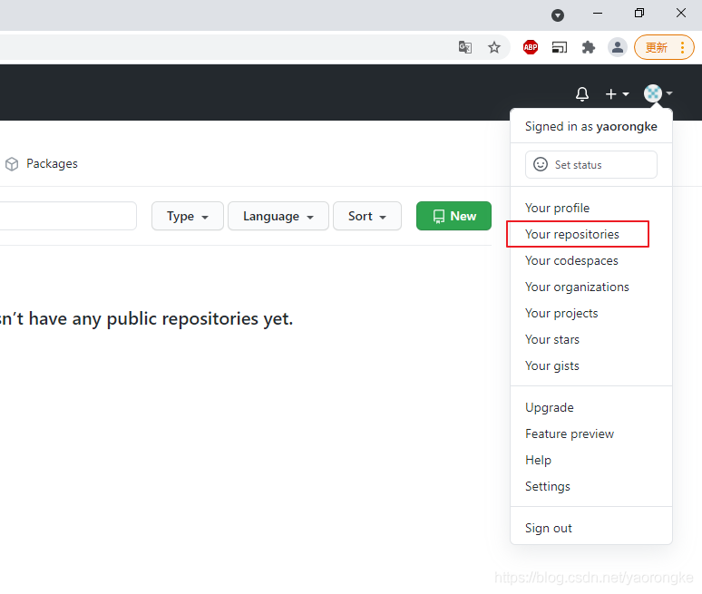
点击New按钮，进入仓库创建页面。
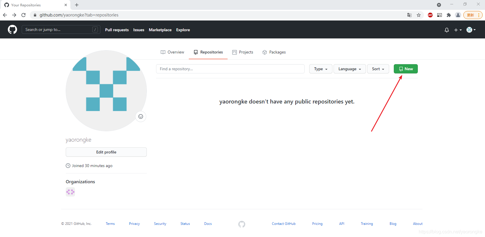
填写仓库名，格式必须为<用户名>.github.io，然后点击Create repository。

点击creating a new file创建一个新文件，作为我们网站的主页。
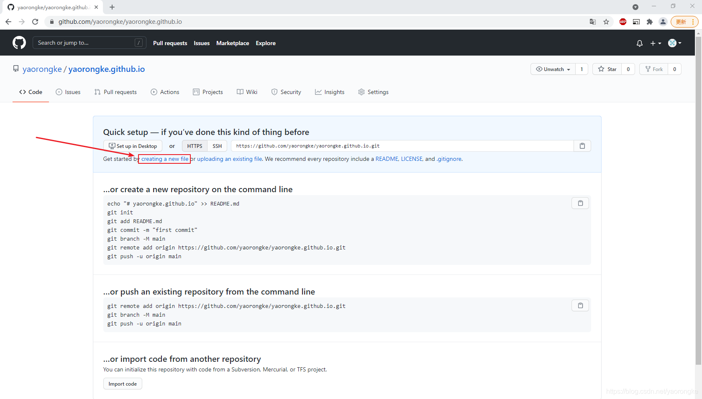
浏览器中访问，展示成功。
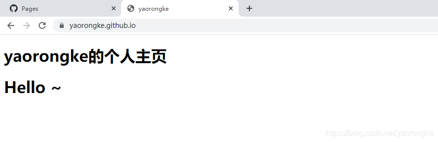
这里创建的网页是非常简陋的，只是为了演示下GitHub Pages的使用方式。
三、安装Hexo
我们采用Hexo来创建我们的博客网站，Hexo 是一个基于NodeJS的静态博客网站生成器，使用Hexo不需开发，只要进行一些必要的配置即可生成一个个性化的博客网站，非常方便。点击进入 官网。
安装 Hexo
1 | npm install -g hexo-cli |
查看版本
1 | hexo -v |
创建一个项目 hexo-blog 并初始化
1 | hexo init hexo-blog |
本地启动
1 | hexo g |
浏览器访问 http://localhost:4000，页面默认主图风格如下
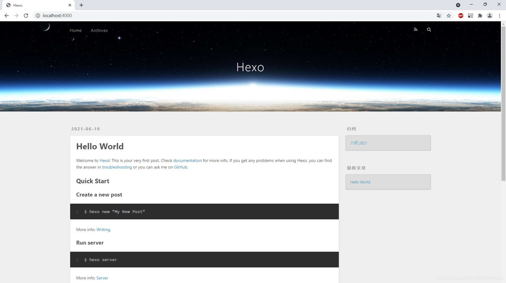
四、更换主题
Hexo 默认的主题不太好看，不过官方提供了数百种主题供用户选择，可以根据个人喜好更换，官网主题点 这里 查看。这里介绍两个主题的使用方法，Next 和 Fluid，个人比较喜欢Fluid，后面章节的功能也是以 Fluid 为基础进行讲解的。
1. NexT 主题
安装主题
1 | cd hexo-blog |
使用 NexT 主题
打开 _config.yml 文件，该文件为站点配置文件
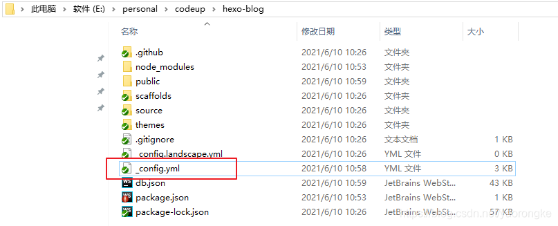
将主题修改为 next
1 | theme: next |
本地启动
1 | hexo g -d |
2. Fluid主题
以下安装步骤摘自 Fluid官网
安装主题
下载 最新 release 版本 解压到 themes 目录，并将解压出的文件夹重命名为 fluid。
指定主题
如下修改 Hexo 博客目录中的 _config.yml：
1 | theme: fluid # 指定主题 |
创建「关于页」
首次使用主题的「关于页」需要手动创建：
1 | hexo new page about |
创建成功后，编辑博客目录下 /source/about/index.md，添加 layout 属性。
修改后的文件示例如下：
1 | --- |
本地启动
1 | hexo g -d |
浏览器访问 http://localhost:4000 ，Fluid主题风格页面如下
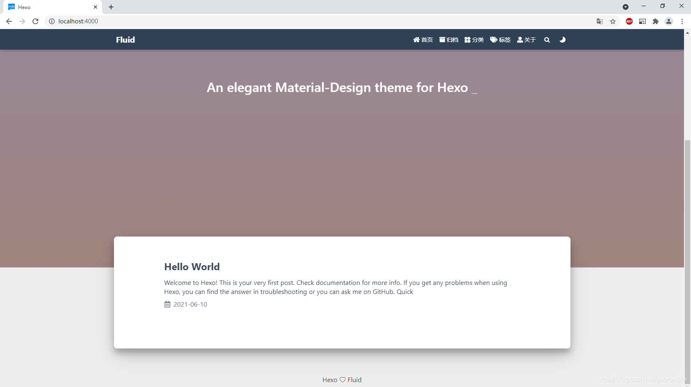
五、创建文章
如下修改 Hexo 博客目录中的 _config.yml，打开这个配置是为了在生成文章的时候生成一个同名的资源目录用于存放图片文件。
1 | post_asset_folder: true |
执行如下命令创建一篇新文章，名为《测试文章》
1 | hexo new post 测试文章 |
执行完成后在source\_posts目录下生成了一个md文件和一个同名的资源目录(用于存放图片)
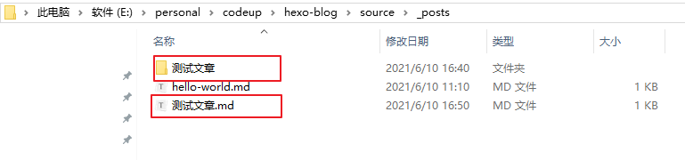
在资源目录测试文章中放一张图片 test.png
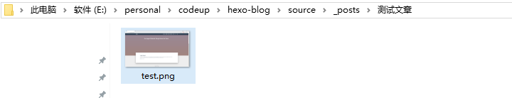
在测试文章.md中添加内容如下，演示了图片的三种引用方式。第一种为官方推荐用法，第二种为markdown语法，第三种和前两种图片存放位置不一样，是将图片放在\source\images目录下。这三种写法在md文件中图片是无法显示的，但是在页面上能正常显示。
图片的引入方式可参考官方文档 https://hexo.io/zh-cn/docs/asset-folders.html，有详细介绍。
1 | --- |
本地启动
1 | hexo g -d |
浏览器访问 http://localhost:4000，页面如下，文章添加成功
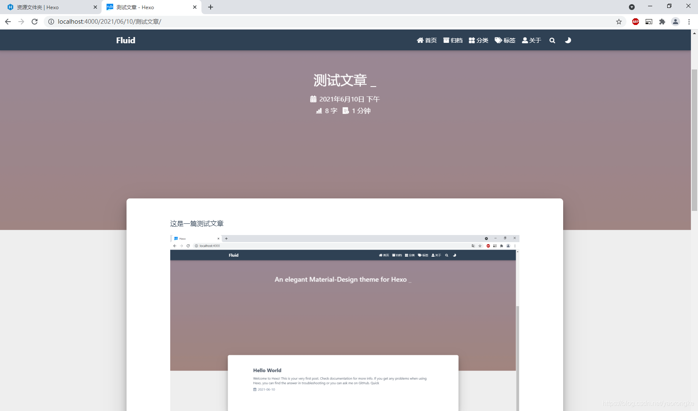
六、个性化页面展示
页面的标题等位置显示默认的文字，可以改下显示一些个性化的信息。
1. 浏览器tab页名称
修改根目录下 _config.yml 中的 title 字段。
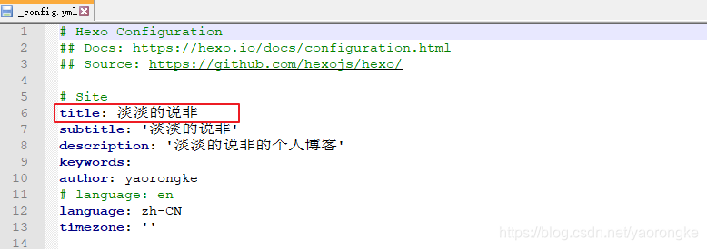
2. 博客标题
主题目录 themes\fluid 下 _config.yml 中的 blog_title 字段。
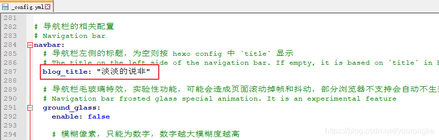
3. 主页正中间的文字
主题目录 themes\fluid 下 _config.yml 中的 text 字段。
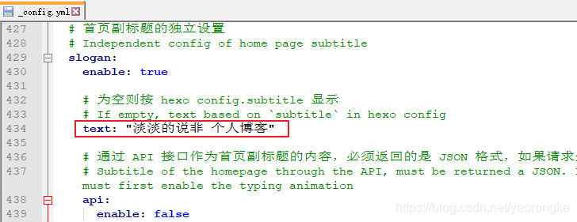
修改好配置后，页面效果如下，可以看到现在显示的内容变成了我们的个人信息。
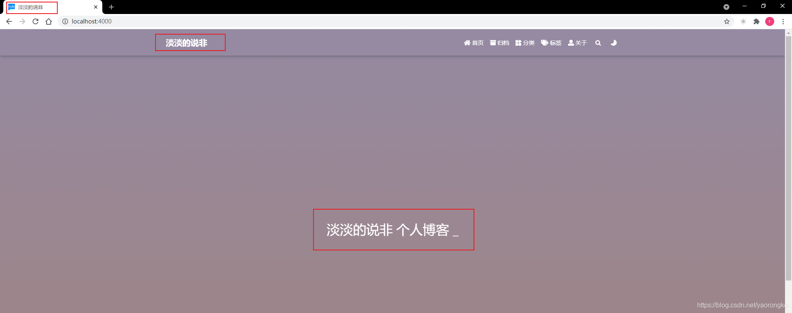
七、添加阅读量统计
Fluid 主题写好了统计阅读量的代码，但是缺少相应配置所以没有开启，需要借助三方服务来统计阅读量，这里是有 Leancloud 的免费服务来进行统计。
1. 申请LeanCloud账号并创建应用
进入 官网 注册账号
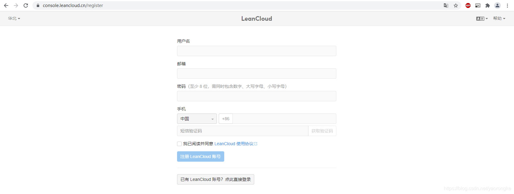
需实名认证，完成后才能使用各项服务
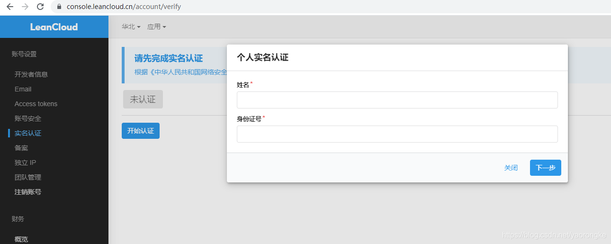
验证邮箱
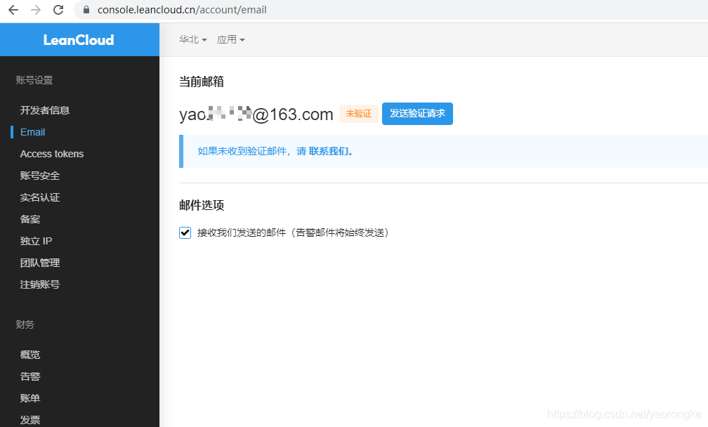
创建应用，选择开发版即可，免费的

进入该应用的 设置->应用凭证，找到 AppID 和 AppKey，记录下来后面配置要用
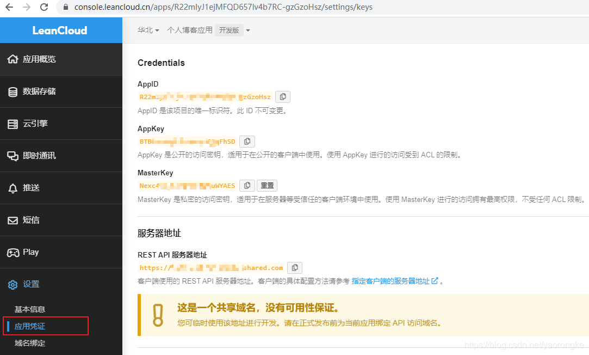
2. 修改Fluid配置
打开主题目录 themes\fluid下的 _config.yml 文件，修改如下配置
单篇文章阅读量计数
打开统计开关
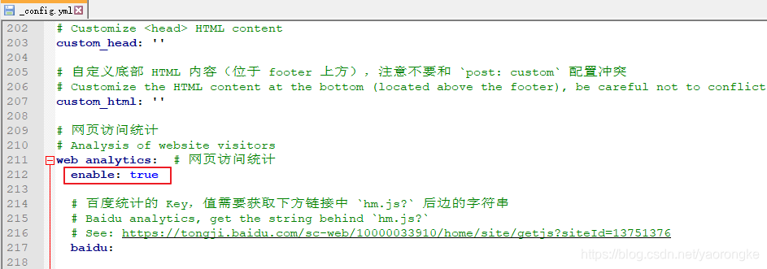
配置 leancloud的 app_id 和 app_key
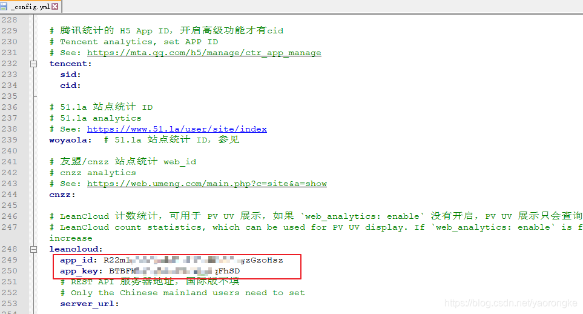
打开计数功能，统计来源改为 leancloud
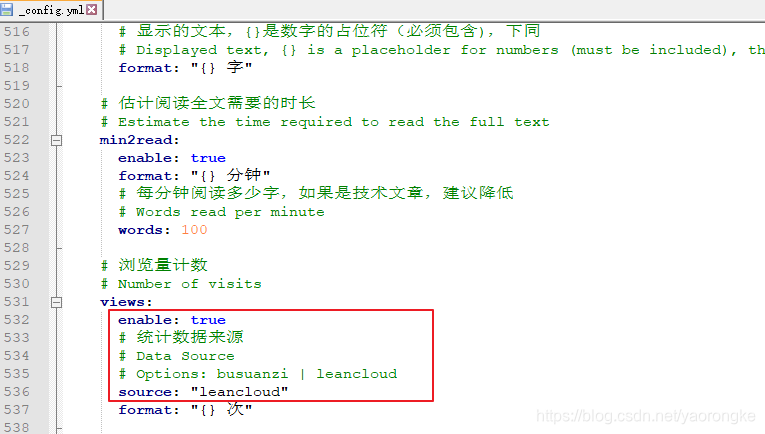
页面效果
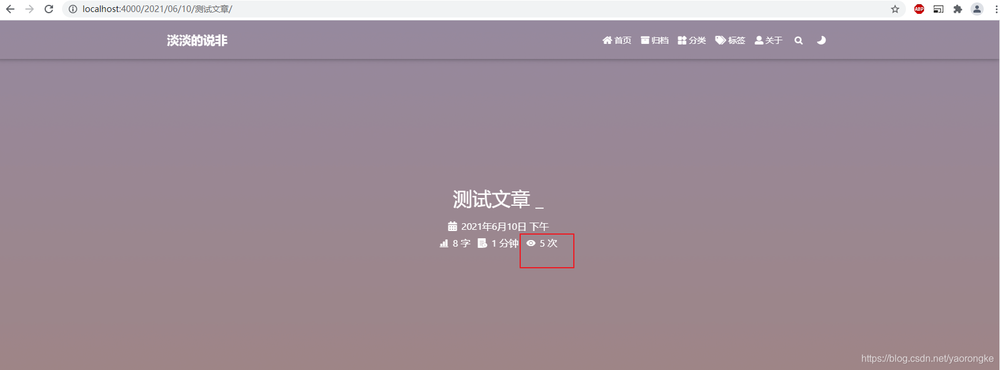
页面底部展示网站的 PV、UV 统计数
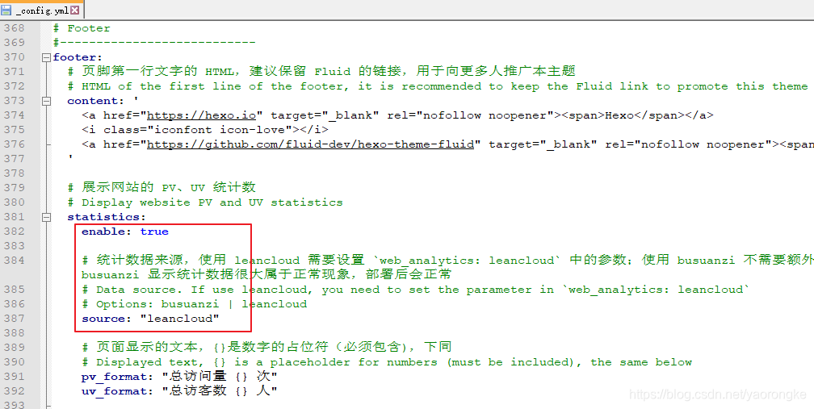
页面效果
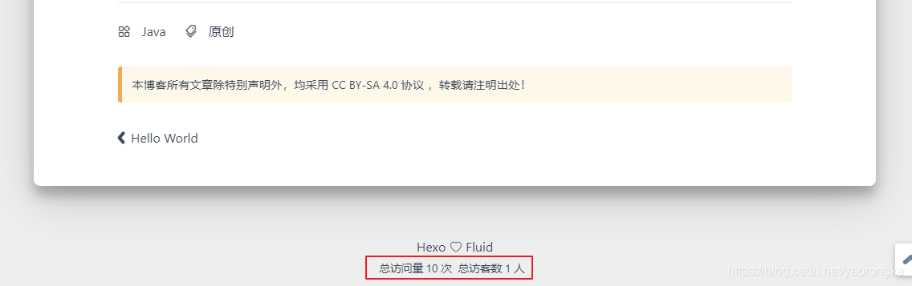
八、添加评论功能
评论功能的代码已经写好了，只不过没有开启，需要修改一些配置
打开主题目录 themes\fluid下的 _config.yml 文件，修改如下配置
启用评论插件
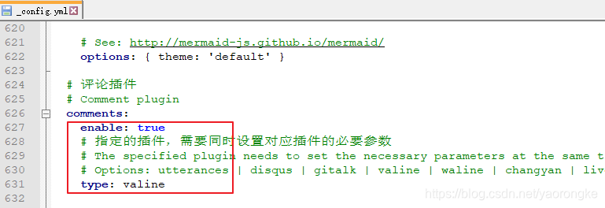
配置 LeanCloud 的 appId 和 appkey
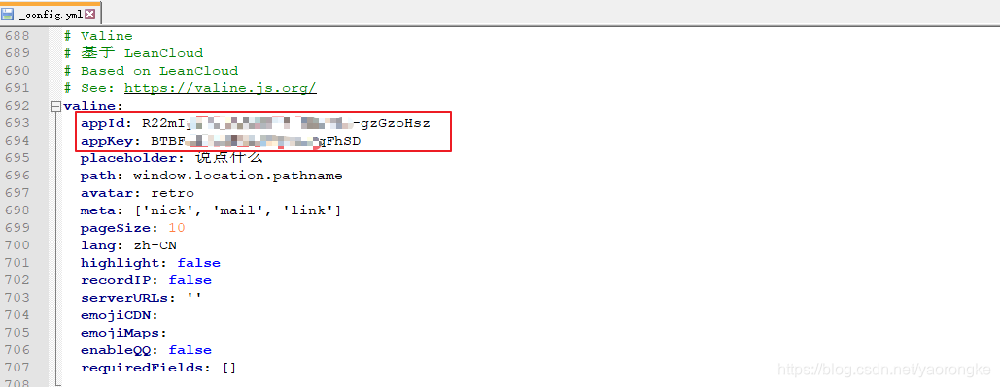
重新部署后，查看页面效果，评论功能已开启
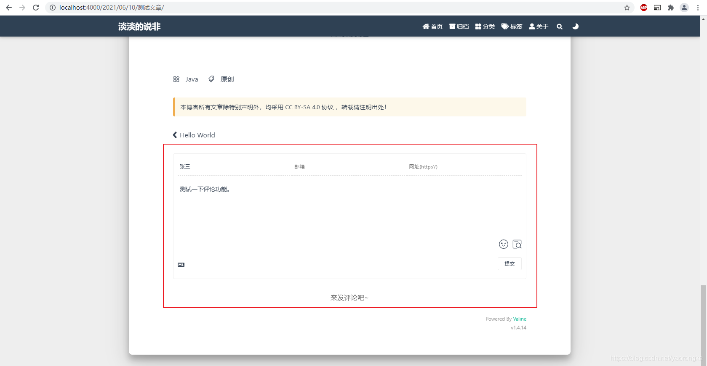
部署在本地时评论无法提交，会报跨域问题，发布到 GitHub Pages 上之后课正常提交评论
九、发布到GitHub Pages
方式一
安装hexo-deployer-git
1 | npm install hexo-deployer-git --save |
修改根目录下的 _config.yml，配置 GitHub 相关信息
1 | deploy: |
其中 token 为 GitHub 的 Personal access tokens，获取方式如下图
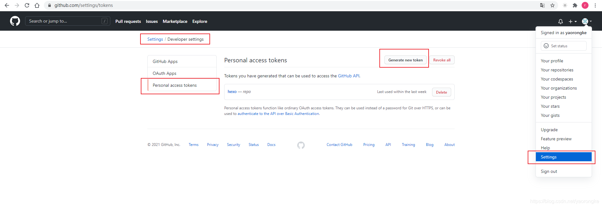
部署到GitHub
1 | hexo g -d |
浏览器访问 https://yaorongke.github.io/ ，部署成功
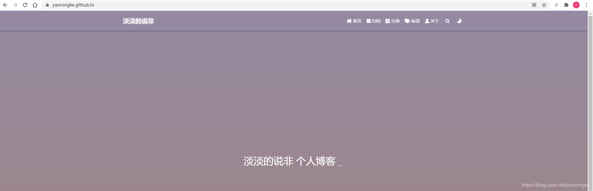
方式二
直接将 public 目录中的文件和目录推送至 GitHub 仓库和分支中。
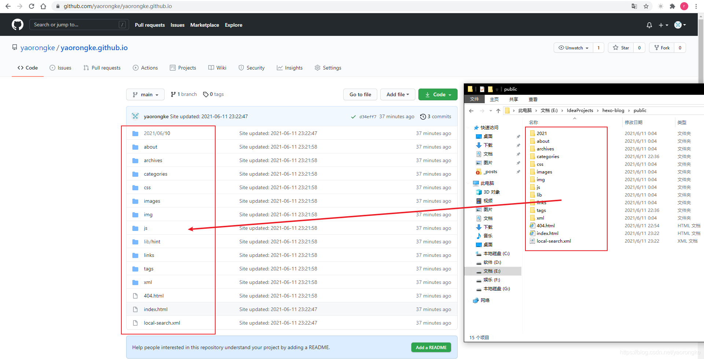
十、发布到自己服务器，Nginx代理
如果自己有服务器的话，也可以不使用 GitHub Pages，直接部署的自己的服务器上，通过 Nginx 进行代理，我这里有一个阿里云上的 CentOS 7 版的 Linux 服务器，演示下如何部署，步骤如下。
打开 hexo-blog 根目录下的 _config.yml，增加如下配置，这是因为把网站存放在了子目录中，要和 Nginx 配置中的 location /blog 路径一致。
1 | root: /blog |
hexo-blog 根目录下执行打包命令，打包好的文件在 public 目录下
1 | hexo g |
将public 目录下的文件复制到 Linux 服务器上的某个目录下，我的存放目录为
1 | /opt/rkyao/fronted/hexo-blog |
修改 Nginx 配置文件，我的 Nginx 安装路径为 /usr/local，大家根据自己实际情况调整
1 | cd /usr/local/nginx/conf |
重启 Nginx
1 | cd /usr/local/nginx/sbin |
访问博客
1 | http://47.96.106.173/blog/ |
十一、最终效果展示
可访问如下地址查看
https://jinianyoushang.github.io/
参考
GitHub Pages + Hexo搭建个人博客网站，史上最全教程_hexo博客-CSDN博客
Butterfly - A Simple and Card UI Design theme for Hexo
Butterfly 安裝文檔(一) 快速開始 | Butterfly
基于 Hexo 从零开始搭建个人博客（五） | 唐志远 (fe32.top)
基于 Hexo 键入搜索功能 | 唐志远 (fe32.top)
配置指南 | Hexo Fluid 用户手册 (fluid-dev.com)
Hexo+NexT+Typora【搭建记录&使用指南】 | Connor (connor-sun.github.io)
Hexo+Github：个人博客的搭建_哔哩哔哩_bilibili
Hexo + Typora + 开发Hexo插件 解决图片路径不一致-腾讯云开发者社区-腾讯云 (tencent.com)